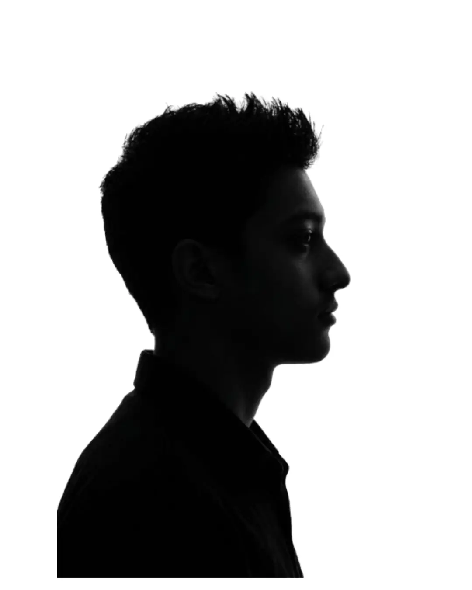

Founder Profile
Saalim Zayed
Founder of Hukm Qalbi
A builder of ideas — Saalim Zayed founded Hukm Qalbi as a home for work that deserves care, clarity, and a place in the world.
01 — Biography
The mind behind the work.
Saalim Zayed is a founder, designer, and writer based between his craft and his convictions.
He founded Hukm Qalbi in February 2024 as an answer to a simple question — where could meaningful ideas be built with the patience and care they actually deserve?
His work spans entrepreneurship, creative direction, digital products, and writing. He approaches every project as a piece of thought made tangible — whether that means a website, a book, a brand identity, or a conversation on the podcast.
Outside of Hukm Qalbi, Saalim writes and publishes independently, contributes to design and product conversations online, and keeps a personal site at zayed-saalim.github.io.
02 — Timeline
A short, deliberate history.
03 — Areas of Work
Where the work lives.
Creative Direction
Setting vision, defining voice, and holding every detail of a project to the same standard.
Brand Building
Building identities — for organizations and products — that hold together over time.
Digital Products
Designing and building tools, platforms, and web experiences with the same care as the brand.
Writing & Publishing
Long-form writing, books, and editorial projects — thoughtful work made to be read and re-read.
04 — In His Words
Principles.
"Ideas begin as thoughts. We give them direction, form, and a place in the world."— Saalim Zayed
"Clarity of intent is the difference between work that lasts and work that fades."— Saalim Zayed
"The most meaningful projects are built slowly, with care — not assembled quickly for the sake of appearing fast."— Saalim Zayed
Ideas worth building begin with a conversation.
If the work on this site resonates — or if you have an idea you think deserves the same care — reach out.
Start a Project →